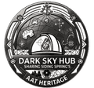

Beyond the Sky Stargazing
Night stargazing tours at The Getaway Tourist Park in Coonabarabran, plus daytime tours of Siding Spring Observatory.

Dark Sky HubCoonabarabran sits under some of the darkest skies on Earth, on the edge of Warrumbungle National Park, Australia's first Dark Sky Park. The best way to see them is with a local guide and a good telescope. Book directly with a local operator below.
Anyone can book these sessions, wherever you are staying.
Night stargazing tours at The Getaway Tourist Park in Coonabarabran, plus daytime tours of Siding Spring Observatory.
Guided night sky tours with Donna and her team at Milroy Observatory, 10 km north-west of Coonabarabran.
Ranger-guided Explore the Dark Sky sessions with telescopes and binoculars at the Warrumbungle Visitor Centre.
These sessions are for people staying with the provider. Book your stay with them to join in.
Lodges in the Warrumbungle foothills with an on-site observatory at 675 metres, offering skywatching for staying guests.
A private suite outside Coonabarabran, with a nightly 16-inch telescope tour and a six-metre fulldome theatre included in each stay.
Providers are listed alphabetically. Sessions depend on the weather, so check times and bookings directly with each provider. For moon phases and the darkest nights, see the Dark Sky Calendar.